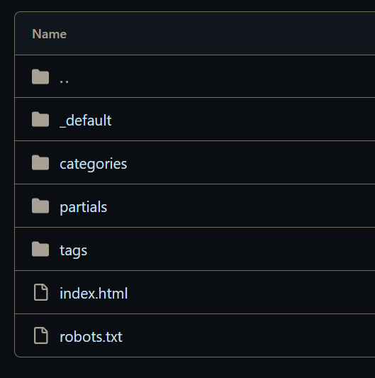
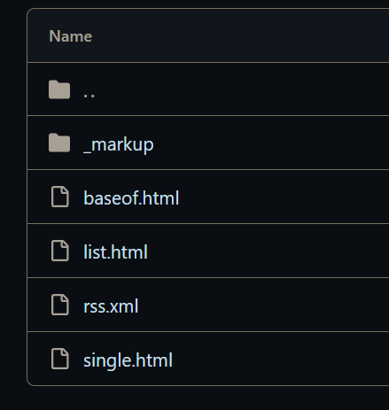
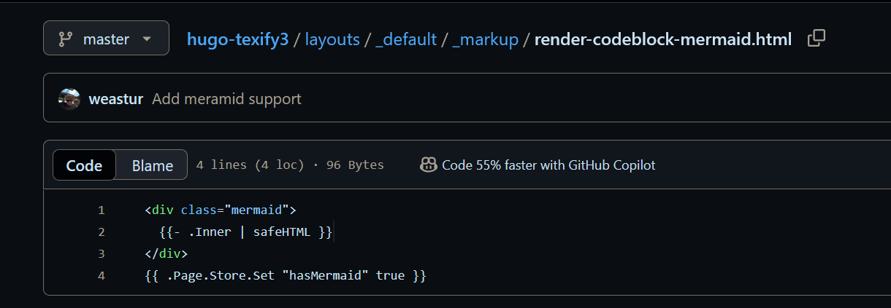

Hugo 学习 01——HelloWorld
对这个 hexo（以及 npm 和 fluid）厌烦了，准备换个博客框架，目前是决定选择 hugo，因为它生态较大，有啥问题应该好查，虽然用的 go 我并不熟悉也不喜欢。
我打算选择一个极简风格的——扁平，专注内容，必须带 TOC，可以带封面图。考虑这个 https://texify3.michaelneuper.com/。之前还想着让博客能更花哨让后面能当我的个人名片呢，但这个……分两个博客吧，专注内容和专注外表的。
You guess what？我决定自己写一个主题，这就要求我必须熟悉 hugo 的基础和它的模板语言。所以迁移之路得往后面推迟，这篇笔记要改名做“Hugo 学习 01——基础”了。跟随《Build Websites with Hugo》。
像这种 SSG，其实不只能够拿来写博客，拿来写相册也是可以的——这时候我不使用 markdown 的内容，而是把所有所需信息全都写在 front formatter 里面，然后在模板里引用这里的元信息，比如可能会这样写：
1 | |
Hugo 文件夹结构
https://gohugo.io/getting-started/directory-structure/
Hugo 是一个静态站点生成器 SSG，业务逻辑全在 hugo 自己里面，我们的博客文件夹里基本上全都是资源文件。
hugo 博客文件夹下，有下面的文件夹：
1 | |
注意，下面的 front formatter 是 toml 格式，我习惯的是 yaml 格式，要使用 yaml 格式，使用---去包围即可：
1 | |
接下来我本来想细看看 Hugo 的整个执行过程的，但是，跟随书中的节奏，learn by practice，先实践了再去总结。我怀疑这书可能不会涉及 hugo modules，再看吧。
创建主页
前面说到，所有 content 里的文章文件都会被解析，然后作为模板的变量在模板中进行使用。这是说，没有文章就没有任何东西生成吗？当然不是，我主页，个人介绍页之类的哪来的？
这证明，layouts 文件夹中的模板是有一定规范的——主页的模板，404 页的模板，各个 category 和 tag 页的模板（对，标签这个功能是内置的），要明确哪些模板、结构是 hugo 提供的，而哪些是主题提供的。实际上，Hugo 有个 Layouts Lookup Rules 是处理如何从 layouts 中找合适的模板的。
homepage 的模板位于 layouts/index.html，文档见 此，homepage 对应的 markdown 文件为 content/_index.md。模板使用的是 Go 的http/templates模块实现的，一个 homepage 的示例为：
1 | |
这里的 Content 从哪来？从这个模板将要对应的 markdown 来。
注意到这些变量都以.开头，这个.指的是当前上下文，好像每个模板类型都有自己的上下文。Hugo 把整个站点的元信息塞到 Site 里。
创建主页：
1 | |
此时可以在模板中引用这里的 title 和 update_time，注意命名规范：
1 | |
创建其他单独页面
仍旧先不谈文章，先考虑其他的单独页面，比如，about 页？
要创建任意页面，需要创建对应的 markdown，下面是 about 页的 markdown，位于content/about.md：
1 | |
所有（没有匹配到的类型的）单独页面，除了主页，都以_default/single.html作为模板。（实际操作时会按一个特定的顺序查找，这里不表）
这里的“单独页面”指的是对应单个 md 的页面，如特定文章，而list.html就是对应多个 md 的页面，通常作为目录等。
这里直接拷贝主页模板到该位置，然后尝试启动服务器，访问localhost:1313/about，就能看到 about 页了。
厘清 layouts 结构
layouts 下面有如下文件：
1 | |
注意，这个 posts是用户可自定义的——用户可以任意定义更多类型，比如文章，相册等。Hugo 根据文章的位置和 Front Formatter 来判断对应的类型，比如content/posts下的 md 就是 posts 类型的，此外 Fromt Formatter 可以指定 type: "some_type" 这样的形式去配置文章对应的类型。如果无法匹配文章的类型，则类型为_default。
注意到 Hugo 的一个命名规范——content/_index.md表示主页，layouts/_default表示默认类型模板，这种有特殊意义的文件都会前缀一个_。
创建主题
在之前，都是直接把模板放到博客根目录下的 layouts 的，这并非最佳实践（那只是为了覆盖主题的模板）——应当创建一个主题，这样就能随便替换而且保持内容和模板分离了。
主题的结构和根目录的结构是基本一致的——主题里甚至能有 content，很好玩。
Hugo 有一个默认的主题生成器（虽然直接全部手写也行啦）：
1 | |
注意到生成的主题没有主页和 404 页（草！）——查看主页的 lookup rule，发现它会退而求其次使用_default/home.html作为主页。
关于 baseof
检查结构，检查到_default/home.html的内容为：
1 | |
它定义了一个什么东西，似乎是叫块，这里显然不是完全的结构，我们再检查default/baseof.html，因为文档中提到说这个是基础模板，其他模板都是继承（还是重写？）自它的：
1 | |
See？注意到，如果编辑home.html，让它包含这个 define 以外的内容的话，就只渲染home.html了。实际上，如果要使用baseof.html，则自己顶层只能有 define（连 html 注释都不能有），这与其说是继承不如说是模板方法了。
这里也注意到 block 的语法是 {{ block "main" . }}{{ end }}，中间看上去可以插值，但那是留给缺省内容的——即如果没有 define 相应块时填充什么东西。
1 | |
这个基础的主题实际上就是假设，整个博客的任何页面都是这个 baseof 里定义的结构——所有页面都必定有 header，content，footer，没有例外。对博客来说这是正常操作。
注意到一个成熟主题的 layouts 和 _default 是一样的普通：


_default 中的_markup，是自定义 markdown 渲染内容用的，这个主题使用该功能将 mermaid 代码块渲染成 mermaid 图表。注意到它甚至不需要再在 front matter 里指定要使用 mermaid：

好吧，这个周六的我已经看一天了，就这样了。周末的时间还是很宝贵的啊。这书可能后面没啥太大必要再看下去了，可以尝试完全在实践中操作了。
本博客所有文章除特别声明外，均采用 CC BY-NC-SA 4.0 协议 ，转载请注明出处！